Designing Efficiency and Accuracy
A redesigned home for PitchBook's corporate events, so investors can quickly access external information and never miss the calls that move their portfolios.
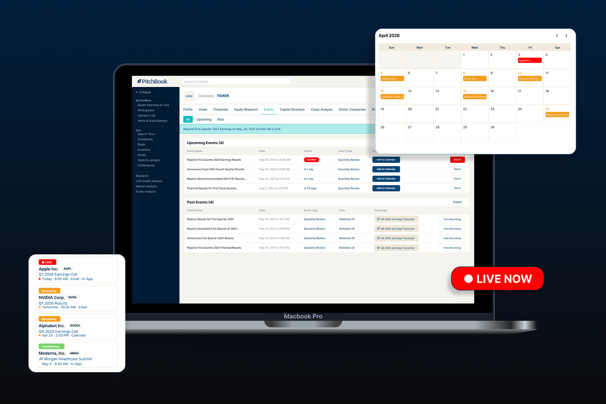
Overview
Corporate Events was a semester-long project with WashU UX Club, sponsored by PitchBook — a platform VCs, private equity firms, investment banks, and corporates use to research private and public markets. PitchBook paired our four-person team (Violet, Lydia, Sage, and me) with one of their senior product designers for weekly critiques grounded in how their users actually think. I worked across research, information architecture, and final UI, taking the project from a blank brief to a shippable redesign.
PitchBook's Brand Colors
Beyond handing us their palette, PitchBook was clear that our deliverables needed to stay consistent with their existing design system — the same navy-and-blue hierarchy, accent colors, type, and components already live on the platform, rather than anything new we might have preferred. Every screen below was built to snap into PitchBook's system, not sit apart from it.
The Problem
PitchBook's users — investors, analysts, and bankers — rely on corporate events like earnings calls and investor presentations to make time-sensitive decisions. The problem: that information lived across scattered sources, costing people time and causing missed calls they cared about. PitchBook's ask was ambitious but clear: build one reliable home for corporate events, where users could spot what mattered at a glance, join a live call in one click, and never lose track of what they wanted to catch.
Process
Research
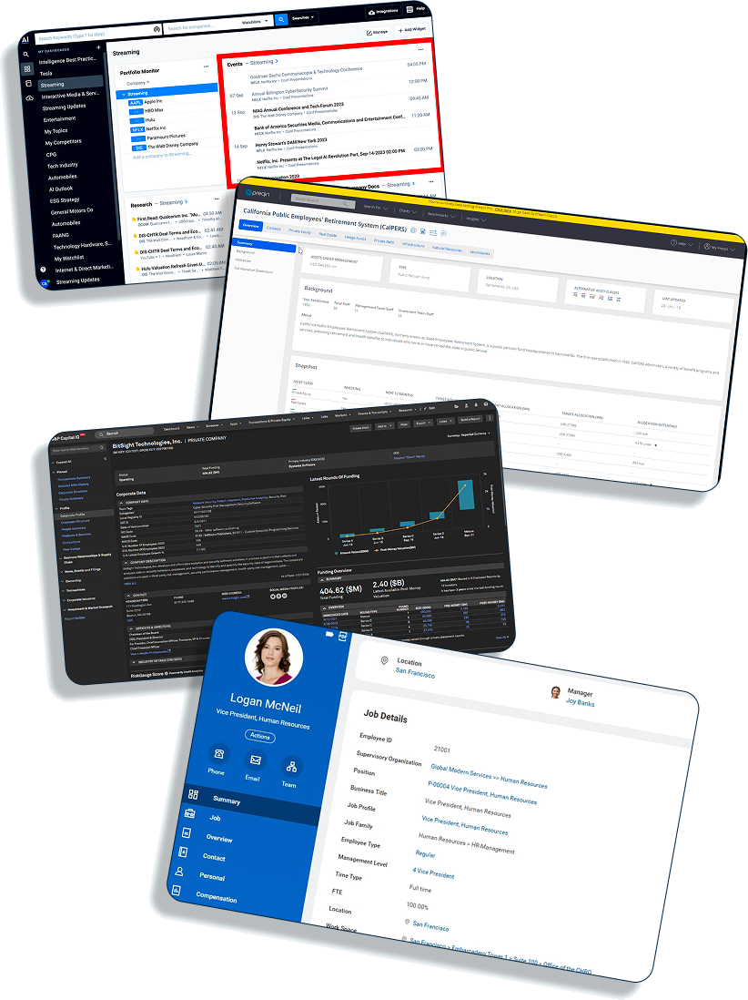
- 1 AlphaSense
- 2 S&P Capital IQ
- 3 Preqin
- 4 Workday
We audited four platforms that handle corporate events or financial data. AlphaSense, Preqin, and S&P Capital IQ were direct competitors; Workday, an indirect one, gave us an outside view on enterprise information design.
- AlphaSense — a clean dashboard with calendar integration, though live vs. upcoming status got buried in a document-centric view.
- Preqin — leaned on visual contrast to signal event status, pointing us toward our own "live now" treatment.
- S&P Capital IQ — sophisticated filtering, living in both a company profile and a dedicated events hub — a pattern we borrowed directly.
- Workday — an indirect reference whose profile-integrated events and calendar precedent shaped how we displayed dates.
Those audits pointed to three concrete opportunities: a dedicated event hub with real filtering; contrast and depth so a live event reads instantly; and corporate events living in two places — a company's profile and one global hub.
To ground the work in real workflows, we built two personas from that research:
Alex Chen
Credit analyst, bulge-bracket bank
Alex covers 15 tech companies and attends every earnings call. He needs to efficiently compare event data, download materials, and set reminders across multiple events at once.
- Prep quickly before each earnings call
- Download transcripts & slides fast
- Set reminders for multiple events at once
- No side-by-side event comparison
- Downloads aren't prominently surfaced
- Reminders only work one at a time
Lisa Rock
Investment manager, mid-size hedge fund
Lisa manages a portfolio of 40+ public equities and relies on earnings events to time buy/sell decisions. She needs real-time updates and fast post-call transcript access.
- Track all portfolio events in one view
- Never miss a live call
- Access transcripts instantly post-event
- No aggregated portfolio events view
- Live status isn't obvious
- Transcript access is buried
The Major Pain Points
Six pain points identified through interviews, surveys, and competitive benchmarking.
Iteration
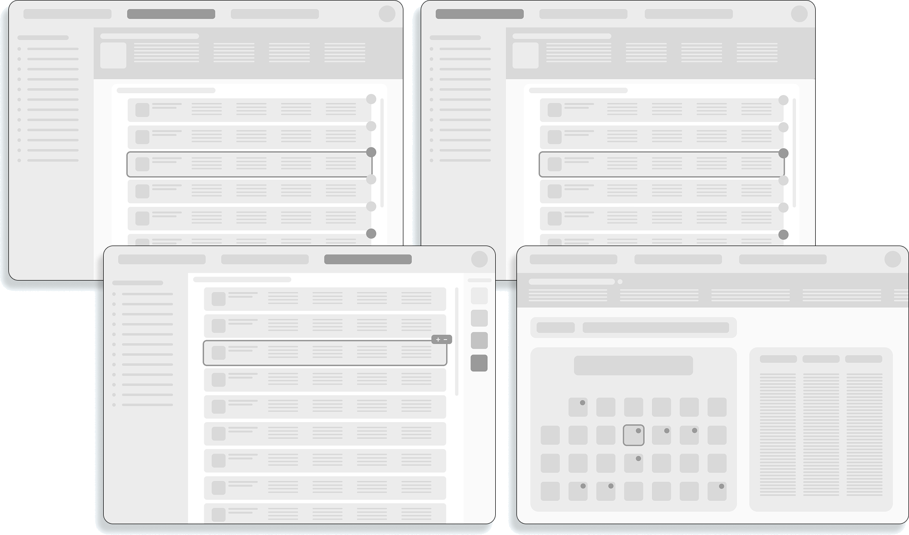
We started low-fidelity, sketching where corporate events should even live (a new tab? the company profile? both, it turned out) and how someone would move between an all-events view, a single company's events, and their own reminders. Our mentor pushed us early to agree on one shared system — colors, buttons, type — before going further, which saved us from a messier merge later.
From there we moved into mid-fidelity: a tabbed all / upcoming / past structure, a toggle between list and calendar views, and a sidebar for filters and reminders. One piece of weekly mentor feedback stuck with us most: PitchBook's branding wasn't a suggestion, it was a requirement — which sent us back to rebuild components to actually match their system, not just borrow its palette.
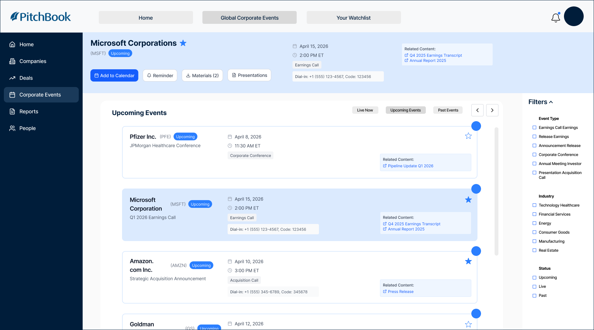
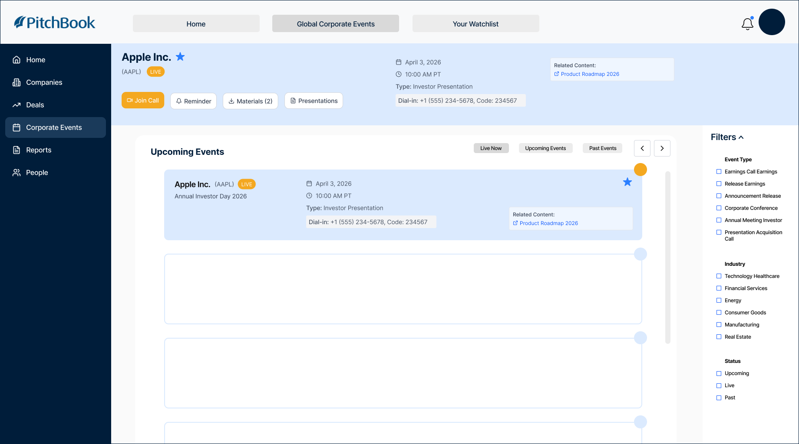
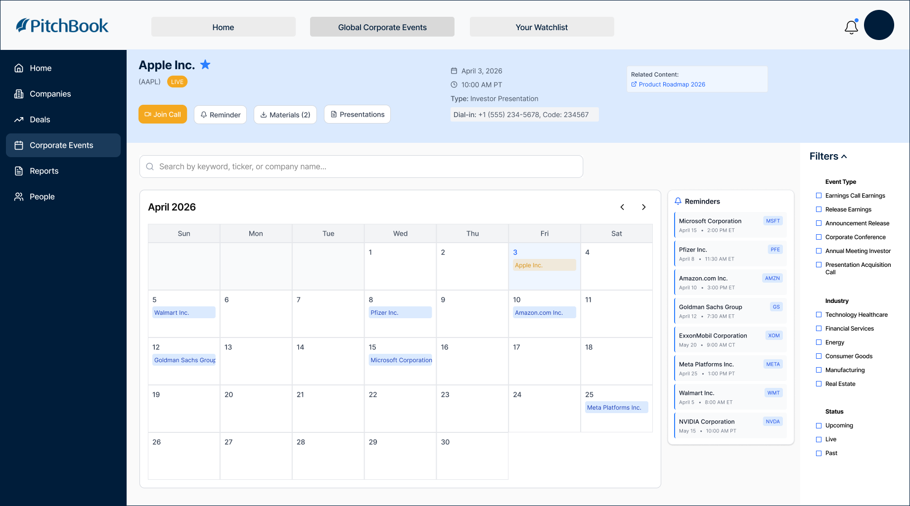
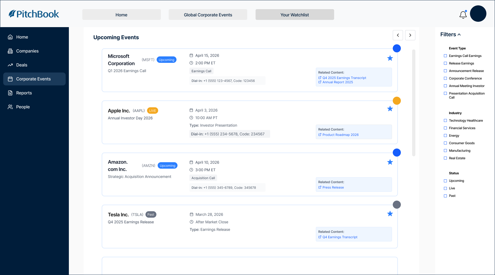
The Solution
The final design gives PitchBook users one home for corporate events: a redesigned events tab with all / upcoming / past filtering, a calendar toggle, a docked reminders panel, and a full event-detail view — plus small touches like an unmissable "live now" badge and named, one-click document downloads.
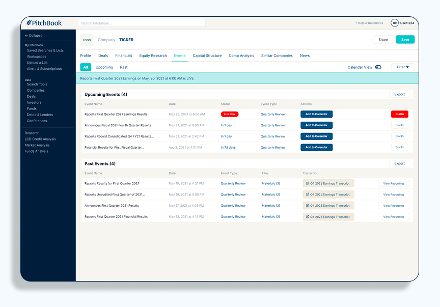
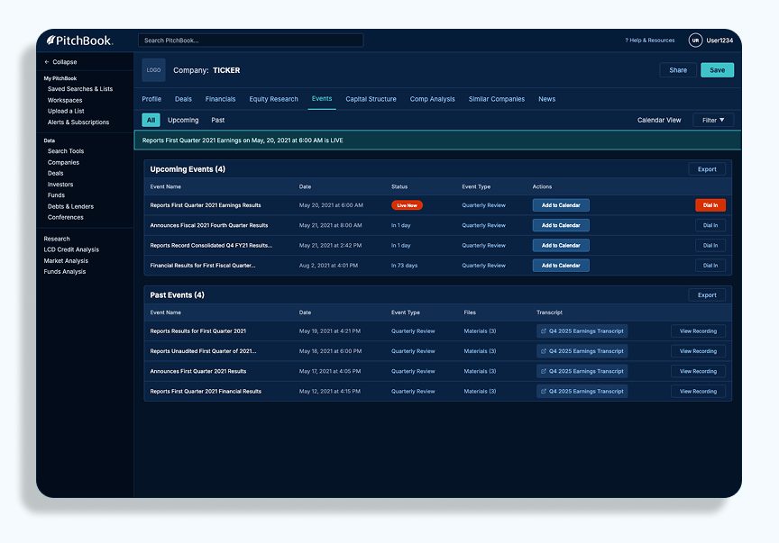
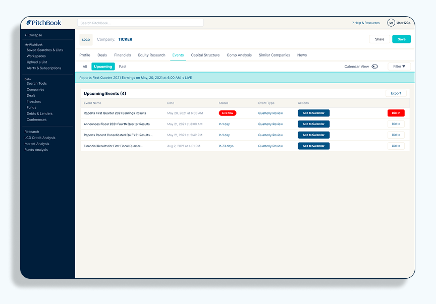
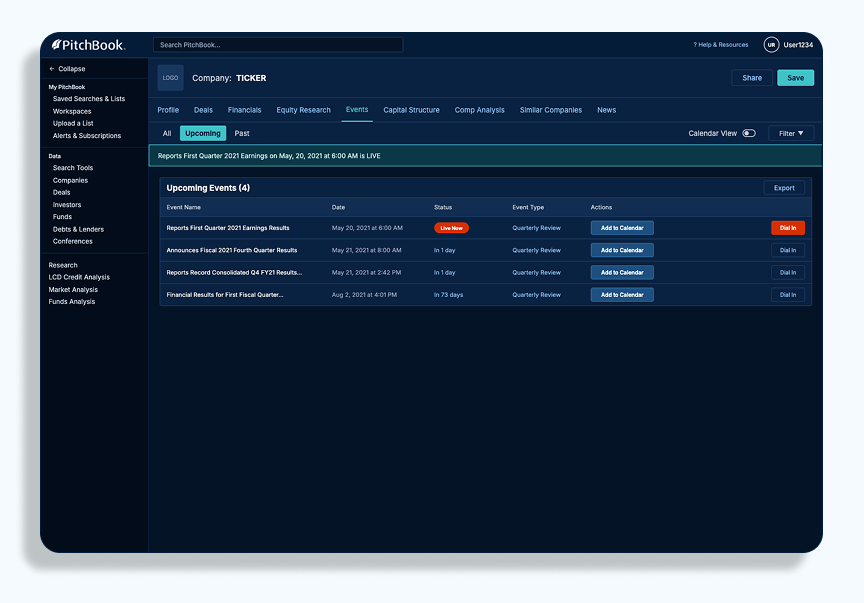
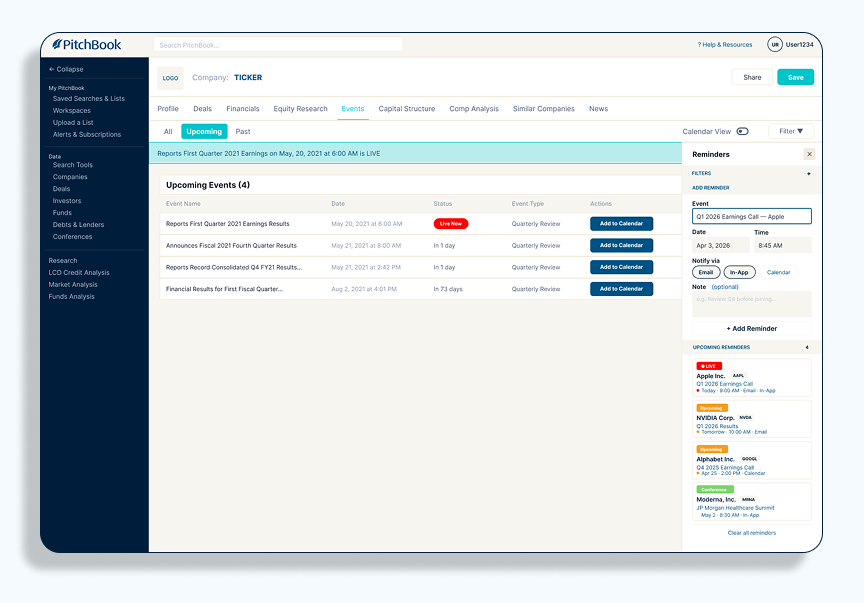
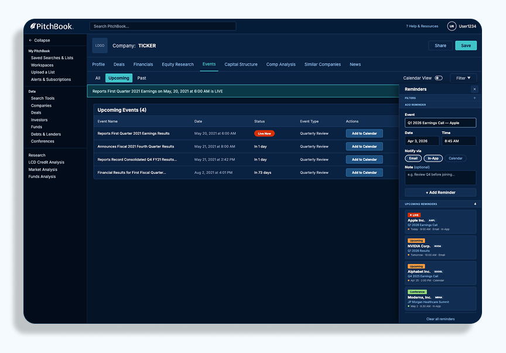
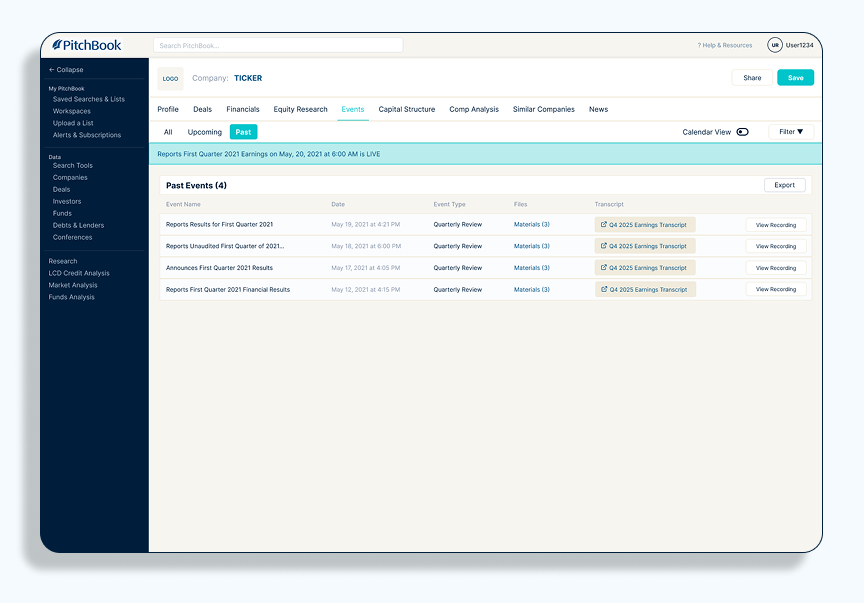
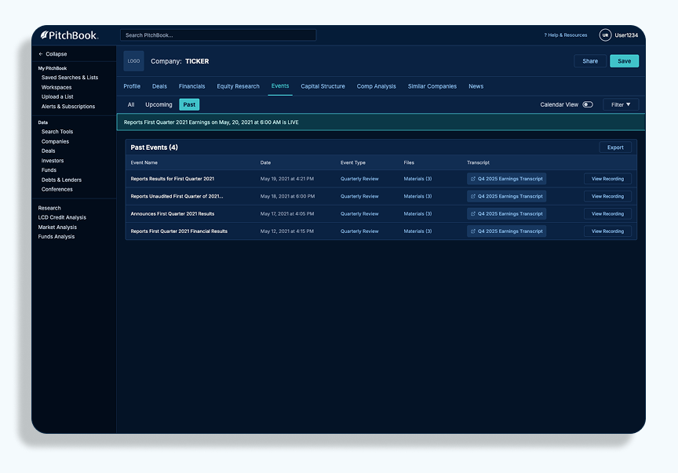
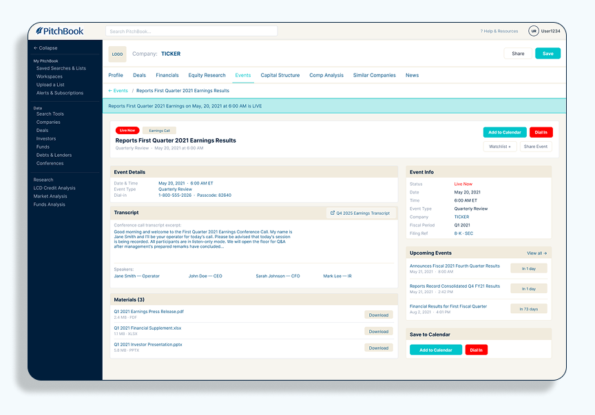
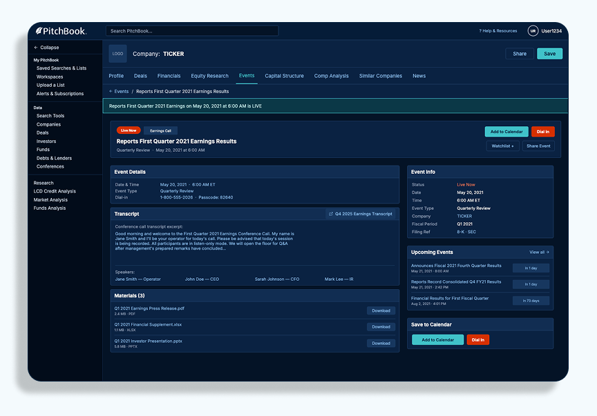
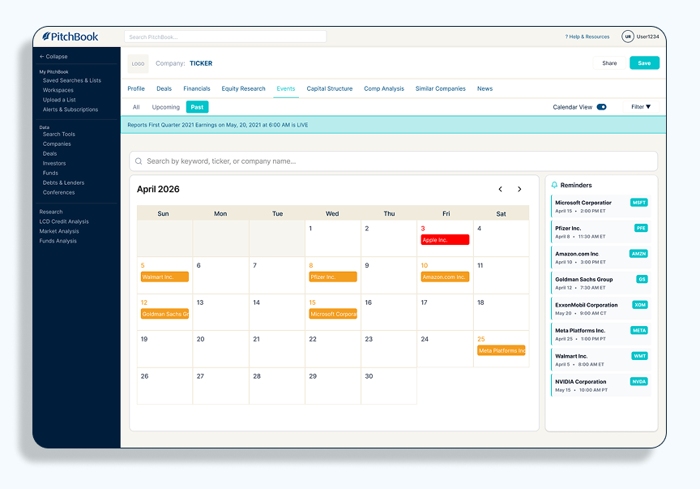
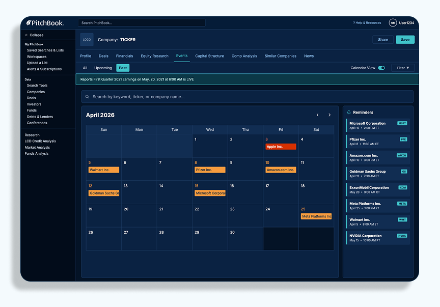
Reflection
-
01
Build a shared system early. Four separate versions were hard to merge — agreeing on one design system from day one would have saved real time.
-
02
Respect brand rules from the start. PitchBook's branding wasn't a suggestion, it was a requirement — learning that early would have meant less rework later.
-
03
Collaborate, don't work in silos. Designing in isolation led to clashing styles; working in one file pushed us toward a single unified solution.
-
04
Stay curious and ask questions. Asking "why" and "how does this fit the brand" early kept small decisions from becoming last-minute problems.